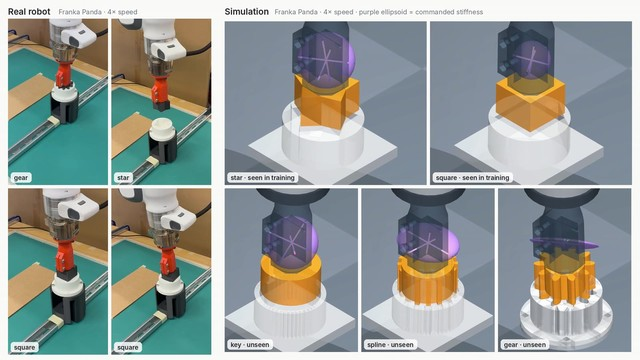
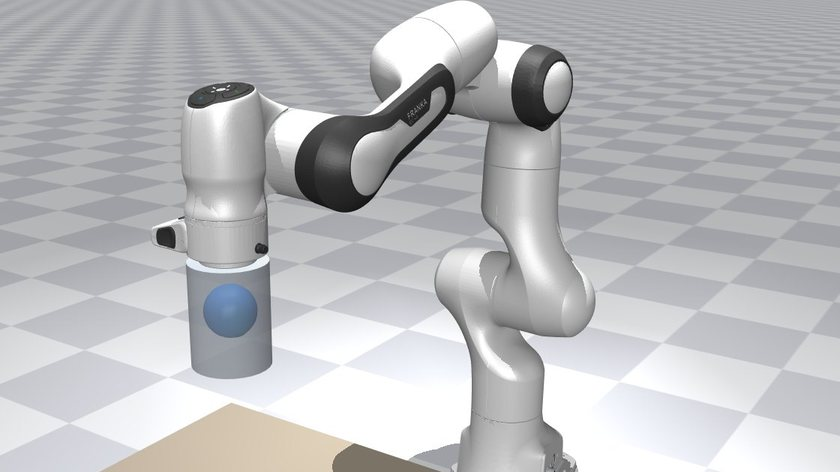
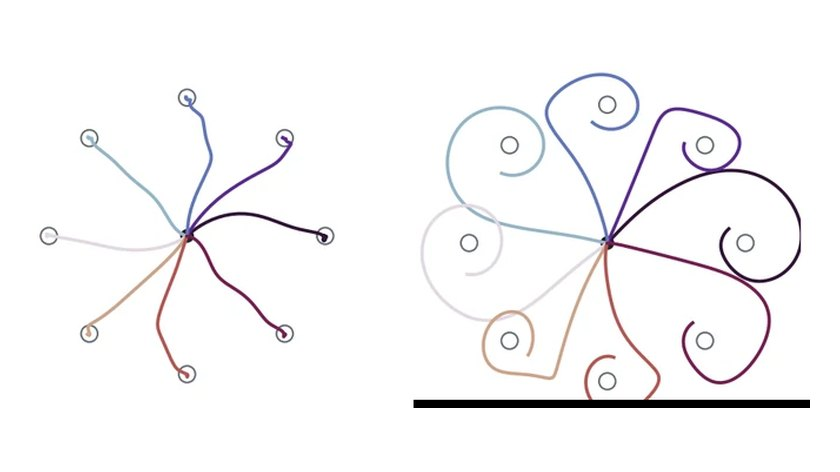
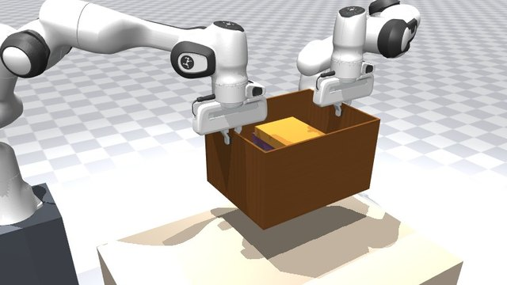

Now
When should a robot be stiff, and when should it be soft?
When a robot arm touches something, it behaves a bit like a spring. A stiff spring follows its plan closely but pushes hard when the plan is wrong. A soft one gives way, but drifts. A robot can learn to change this stiffness as it moves, much as you tense or relax your arm.
Many studies report that learning to change stiffness beats keeping it fixed. I want to know when that is really true, and how to keep a robot safe while it is still learning. I would rather report an honest no than a lucky yes.
I also read a lot about how the brain controls movement. People adjust the stiffness of their arms all the time, and how they do it is the best guide I have found. The notes below are what I have learned.
Work
Papers and Projects
Papers

Learning Contact-Rich Skills from a Few Demonstrations Paper in preparation · first author, with Jing Xiao Show a robot a few times, and let it practice the rest. A few human demonstrations become verified practice in simulation that teaches a robot how to move and how firmly to hold when it touches. Read more →
Self-Confirming Selection: Why Modular Robot Memories Fail to Recall Paper in preparation A robot with a different skill for each situation can get stuck using the wrong one after the situation changes, like a robot dog that keeps limping after its leg has healed. Why it happens, how to predict it, and a fix. Read more →Projects

A Neural Network Motor Cortex That Adapts Like People Do Project A recurrent network learns to control a model human arm, then adapts to a force field the way people do, after-effect included. The same network then drives a robot arm. Read more →
How Hard to Hold It: Two Robot Arms and Everyday Objects Project Two robot arms carry a laptop, a chair, a basket of apples, a box of books and more, without being told how heavy or fragile each one is, and learn how hard to grip from what they feel. Read more →Open source
Achievements
Writing
Reading notes, maths and fundamentals.
Notes from my reading on how the brain controls movement and what robots can learn from it, the maths I use, and how the computers that run robots work. These go into more technical detail.
Literature review
From sensorimotor neuroscience to robots
Robot learning
Fundamentals
Learning and numerics
Machines that run robots
Computing in nervous systems
Maths notes
Contact
Get in touch.
I’m happy to talk about robots that work by touch, safe robot learning, how the brain controls movement, or a simulator bug you have run into.